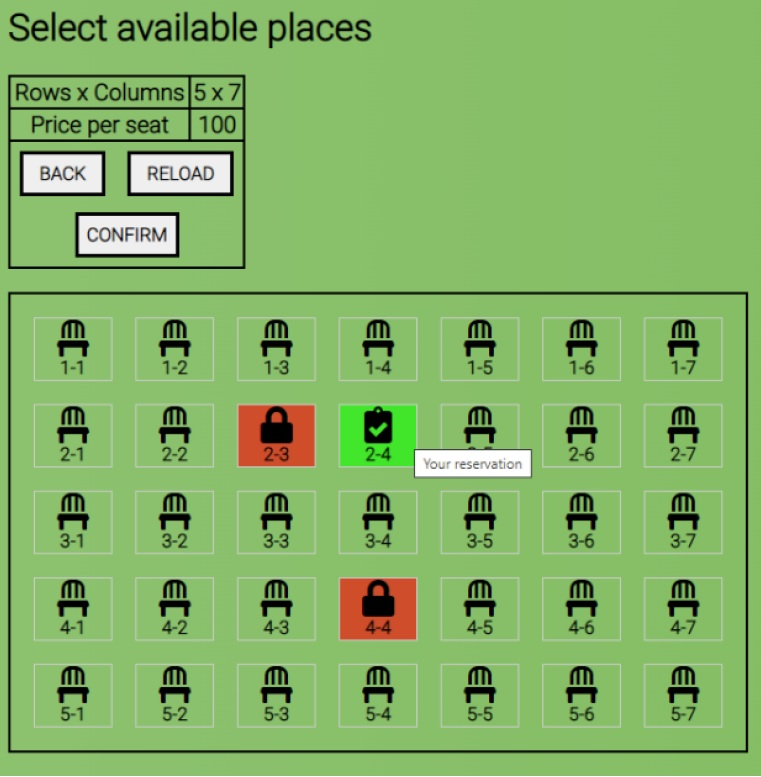
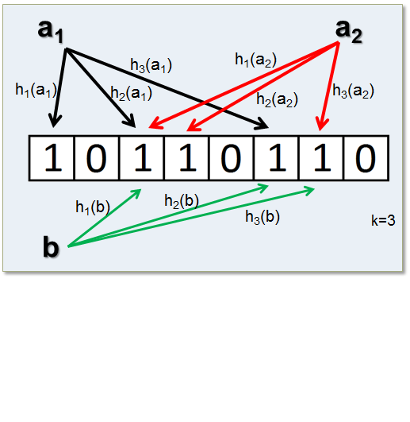
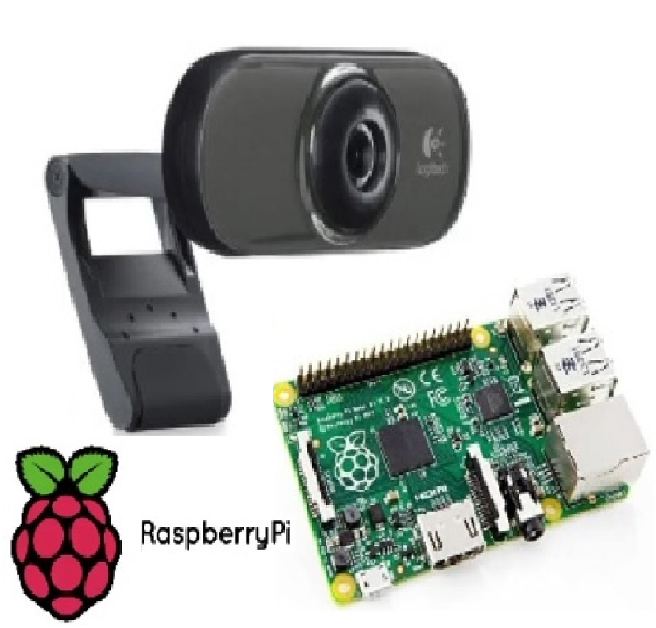
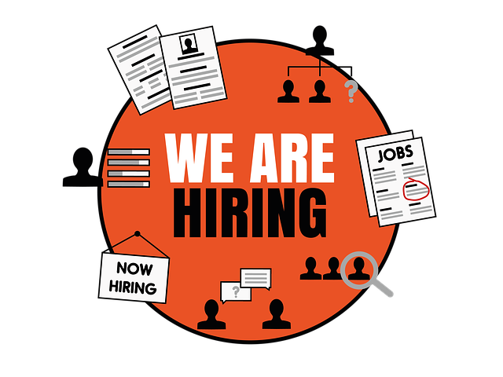
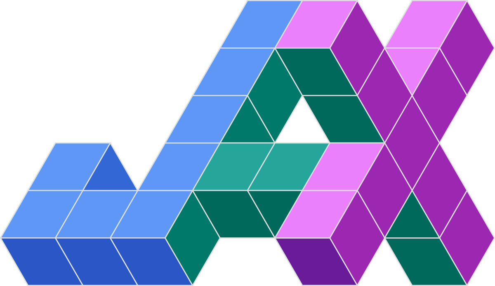
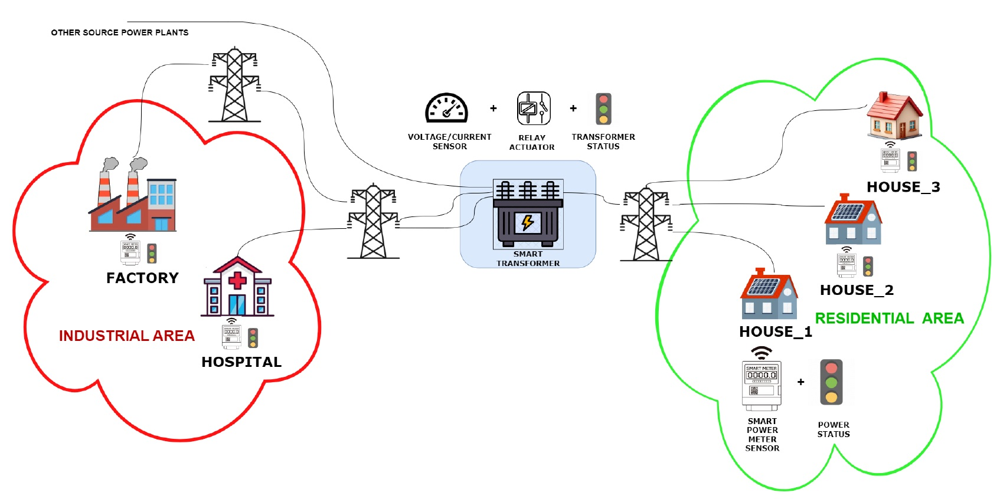
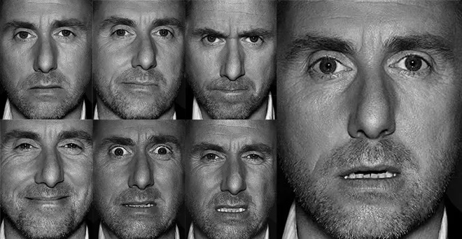

About Me
I’m Davide Vigna, a Computer Engineer with 5 years of experience as a Full Stack Developer. I completed my Bachelor’s in Computer Engineering in Pisa in 2018 and quickly transitioned into the professional world, applying my skills in real-world projects. Motivated by a keen interest in artificial intelligence, I furthered my education with an MSc in Artificial Intelligence and Data Engineering in Pisa graduating in 2025.
Current focus
I would like to pursue a career in the AI field and in particular in the roles of AI/ML Engineer, Dev-Ops or Software Engineer. However, I remain open to similar positions that enhance my skills.
Technical Skills
Programming languages most used (and preferred): C, C++, Java, Python
Other languages and technologies known: PHP, HTML5/CSS, Javascript, JQuery, Assembly x86, Spring Boot, Docker, Maven, Hibernate ORM, MatLab, Git, Raspberry Pi, WordPress, Web Services, Web Scraping
ML frameworks and libraries most used: TensorFlow, PyTorch, Keras, Pandas, NumPy, Scikit-learn
Databases familiarity: RDBMS with SQL (MySql, DB2) and NoSQL with MongoDB
OS familiarity: Windows, Linux
IDE familiarity: Eclipse, NetBeans, Visual Studio, Visual Studio Code, IntelliJ
Soft Skills
- Problem solving and critical thinking
- Time management and priorities
- Adaptability and teamwork
- Curiosity and a deep passion for continuous learning, staying up to date with industry trends
Languages Spoken
- Italian (native language)
- English (B1)
Personal goals
In the short term, I aim to strengthen my expertise in ML and AI algorithms, starting to apply them in practical working scenarios, and gain hands-on experience in industry-specific AI. Specifically, I would like to master deep neural networks, refine my skills in computer vision, and stay up to date with the latest advancements in AI research.
In the long term, I aspire to become a versatile AI professional, capable of adapting to various scenarios and responding effectively to evolving market demands.
Free Time
I’m passionate about sports, especially ⚽ football—both playing with friends and watching matches. I also regularly do 🏃 running and whenever possible 🚴 cycling, ⛷️ skiing and 🎣 fishing.
Nature, especially the ⛰️ mountains, is a big part of what I love. It allows me to disconnect from technology, recharge, and come back even stronger.
I have a deep appreciation for cinema 🎬 and TV series 📺.
Travelling ✈️ is something I truly enjoy, and I hope to find more time for it.
Fun Facts
My nickname is AlterVigna and it originates from the popular web platform Altervista, where I first started developing my own Fantasy Football (Fantacalcio) site in PHP. My friends constantly mixed up the site's domain with my surname.
Experience
🎓 Academic MSc
- Big Data & AI:
- Data storage: NoSQL (MongoDB, Neo4j)
- Data mining: data preprocessing, data scraping and data analysis
- Implementation of supervised and unsupervised learning algorithms and evaluation of performances
- Machine learning (NumPy, Pandas, TensorFlow, PyTorch, JAX)
- Cloud & Distributed Computing:
- Docker
- Kubernetes
- Hadoop
- Optimization & Intelligence:
- Computational Intelligence: Deep learning (Neural Networks,CNNs and RNNs), Fuzzy Logic
- Genetic algorithms
- Reinforcement learning
- Search & Retrieval:
- Information retrieval: smart datastructures and strategies to rapid researches
- Search engine development
- LLM experimentation
- IoT & Edge AI:
- IoT applications (MQTT/CoAP)
- ML/DL on edge devices
- High-Performance Computing:
- Multi-threading
- GPU optimization (CUDA-C)
- XAI (eXplainable Artificial Intelligence):
- Experimentation of Global-Local methods and model agnostic
- Focus on multi-class counterfactual generation using DiCE, Lore(SA) and CP-ILS.
Master's thesis titled:
"Design and evaluation of an ensemble of latent spaces to generate counterfactuals for explainable multiclass emotion recognition"
💼 Prefessional
26/07/2018 - 31/07/2023: 5 years as Full Stack Developer at 01Informatica
- Web application development with Java EE on the ERP Codice01
- Development of REST APIs and microservices with Spring Boot, integration with external solutions via web services
- Database management (DB2, SQL queries, stored procedures)
- Front-end development with HTML5, CSS, JavaScript, jQuery, JSP, and Thymeleaf
- Containerization and deployment with Docker; CI/CD with Jenkins
- Bug fixing, troubleshooting, reverse engineering and optimization of already present solutions on both front and back-end
- Working in a team of developers with team-based software releases
Featured Projects
League-of-Legends Match Predictor

Design and development of an application able to predict a team’s victory in a League of Legends game using data mining and machine learning tecniques
View on GitHubLet’s Movie

A NoSQL, large-scale, multi-structured database solution using MongoDB for efficient storage and management of film data obtained through web scraping from mymovies.it
View on GitHubFooTickets
A distributed ticketing system for football matches exploiting modern middleware technologies such as Spring Framework. Part of the service is realized using Java EE and part in Erlang
View on GitHubBloom Filters
Cloud-based application that leverages the Map-Reduce technique within the Hadoop framework to build and manage Bloom filters, enabling efficient detection of ratings in the IMDb dataset
View on GitHubHome Surveillance
A cheap home surveillance system (Raspberry Pi + webcam) to detect nine common life scenarios. Deep CNNs are trained from scratch, transfer learning from leading networks is applied, comparing the performances, and YOLO v3 is employed for object detection.
View on GitHubScreening and Selection of Candidates
This work addresses a actual business need by providing HR teams with a fast solution to streamline candidate selection. Using machine learning clustering and NLP techniques on CVs, it aims to segment salaries and profile candidate skills efficiently.
View on GitHubSIC-Machine-Learning
This project involves porting TensorFlow DL demos from the Samsung Innovation Campus to the emerging JAX framework, analyzing its strengths and unique features and comparing its performance with Keras, PyTorch, and TensorFlow.
View on GitHubOptimized Parallel K-Means on CPU & GPU
Implementation of parallel version of K-Means algorithm in C language. Thread optimizations, Intel VTune, CUDA C, and Nsight Compute are used to refine performance and to maximize hardware efficiency on the available computer architecture.
View on GitHubSPARK-GRID
(Smart Power and Adaptive Real-Time Knowledge)
IoT application for Smart Grid monitoring using WSN and CoAP. NRF52840 Dongles simulate a Smart Transformer and Power Meter for optimized power management, with ML on the transformer edge device for fault detection and correction.
View on GitHubMASTER'S THESIS
Topic: eXplainable Artificial Intelligence
Design and evaluation of an ensemble of latent spaces to generate counterfactuals for explainable multiclass emotion recognition. Elaborated tabular physiological data to compare a novel approach with DiCE across multiple counterfactual metrics.
View on GitHubContact
You can send me a message for collaborations or discussions on the following platforms: